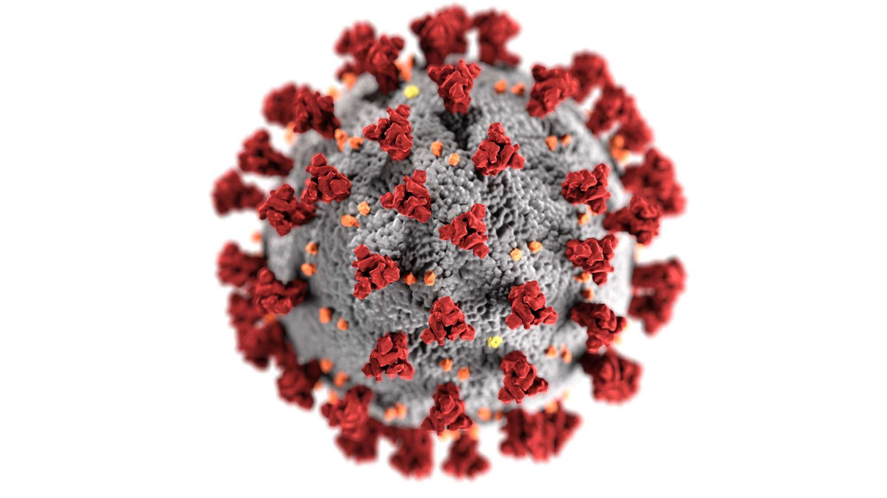

Covid-19, todo sobre este terrible virus
La enfermedad por coronavirus de 2019,más conocida como COVID-19 o covid-19 onota el o la covid, corona e incorrectamente llamada neumonía por coronavirus o coronavirus,nota es una enfermedad infecciosa causada por el SARS-CoV-2.
Produce síntomas similares a los de la gripe o catarro, entre los que se incluyen fiebre, tos,13disnea (dificultad respiratoria), mialgia (dolor muscular)y fatiga.En casos graves se caracteriza por producir neumonía, síndrome de dificultad respiratoria aguda,17sepsis18 y choque séptico que conduce a cerca de 3,75 % de los infectados a la muerte según la OMS.19 No existe tratamiento específico; las medidas terapéuticas principales consisten en aliviar los síntomas y mantener las funciones vitales.15
La transmisión del SARS-CoV-2 se produce mediante pequeñas gotas —microgotas de Flügge20— que se emiten al hablar, estornudar, toser o espirar, que al ser despedidas por un portador (que puede no tener síntomas de la enfermedad o estar incubándola)21pasan directamente a otra persona mediante la inhalación, o quedan sobre los objetos y superficies que rodean al emisor, y luego, a través de las manos, que lo recogen del ambiente contaminado, toman contacto con las membranas mucosas orales, nasales y oculares, al tocarse la boca, la nariz o los ojos. Esta última es la principal vía de propagación, ya que el virus puede permanecer viable hasta por días en los fómites (cualquier objeto carente de vida, o sustancia, que si se contamina con algún patógeno es capaz de transferirlo de un individuo a otro).También está documentada la transmisión por aerosoles.
Los síntomas aparecen entre dos y catorce días (período de incubación), con un promedio de cinco días, después de la exposición al virus.Existe evidencia limitada que sugiere que el virus podría transmitirse uno o dos días antes de que se tengan síntomas, ya que la viremia alcanza un pico al final del período de incubación.El contagio se puede prevenir con el lavado de manos frecuente, o en su defecto la desinfección de las mismas con alcohol en gel, cubriendo la boca al toser o estornudar, ya sea con la sangradura (parte hundida del brazo opuesta al codo) o con un pañuelo y evitando el contacto cercano con otras personas, entre otras medidas profilácticas, como el uso de mascarillas. La OMS desaconsejaba en marzo la utilización de máscara quirúrgica por la población sana,en abril la OMS consideró que era una medida aceptable en algunos países.34No obstante, ciertos expertos recomiendan el uso de máscaras quirúrgicas basados en estudios sobre la Influenza H1N1, donde muestran que podrían ayudar a reducir la exposición al virus.Los Centros para el Control y Prevención de Enfermedades (CDC) de Estados Unidos recomiendan el uso de mascarillas de tela, no médicas.Recomendación de los CDC (febrero de 2021)37